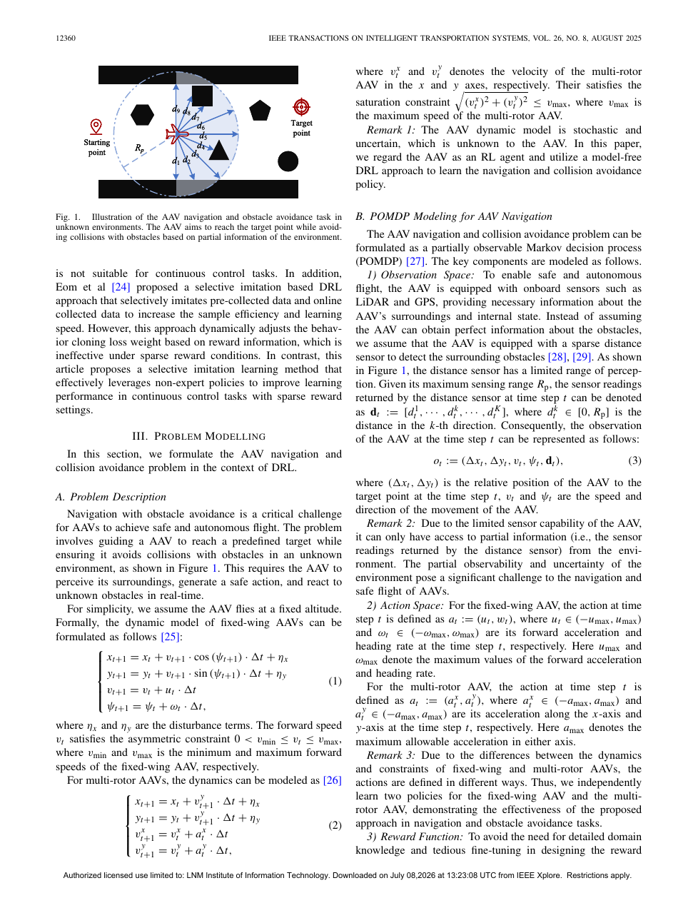

Selective imitation enhanced deep reinforcement learning for AAV navigation and obstacle avoidance with sparse rewards
§1 Paper Information
1.1 Complete Metadata
| Title | Selective imitation enhanced deep reinforcement learning for AAV navigation and obstacle avoidance with sparse rewards |
| Authors | Yan et al. (Chao Yan 主要作者, NUAA 合作) |
| Year / Venue | 2025 / IEEE (14 pages, received/accepted 2025) |
| Algorithm | SBCAC: Selective Behavior Cloning enhanced Actor-Critic |
| Key Results | Success Rate +16.07%, Crash Rate -72.46%, Stray Rate -94.62% (vs selective-imitation baseline) |
| Validation | Simulation + Hardware-in-the-Loop + Physical experiments (fixed-wing & multi-rotor) |
| Core Mechanism | Experience Filter + Q-value Action Selector (dual-gate for selective APF imitation) |
1.2 TL;DR (Chinese Summary)
本文提出SBCAC（Selective Behavior Cloning enhanced Actor-Critic）——一种利用非专家演示器（人工势场APF）加速稀疏奖励DRL训练的端到端学习框架。核心创新是双重正交门控机制：(1) 经验过滤器在动作空间剔除APF的明显错误建议；(2) Q值动作选择器在价值空间实时仲裁策略动作和APF动作的优劣。两者级联实现了"有用的APF经验就学，坏的APF经验就扔"的选择性模仿。BC损失权重随时间衰减，实现从"依赖APF引导"到"超越APF上限"的渐进自主化。在固定翼和多旋翼两类平台、多种障碍场景中，SBCAC相对最先进的选择性模仿基线：成功率提升16.07%，碰撞率降低72.46%，偏航率降低94.62%。硬件在环和实物飞行实验验证了仿真到实物的可迁移性。该方法为"如何从非最优先验知识中有效提取学习信号"提供了一个精巧而通用的框架。
1.3 Tags
Deep Reinforcement Learning Imitation Learning Sparse Reward Selective Behavior Cloning Artificial Potential Field POMDP + Actor-Critic Hardware-in-the-Loop§2 Core Insight & Novelty
这个工作的核心insight是什么？
稀疏奖励下DRL的核心困境是探索-信息悖论：学好需要好数据，好数据需要好策略，好策略需要学好——鸡生蛋蛋生鸡。APF等经典规划器可以打破循环（提供初始方向引导），但APF本身是有缺陷的（局部极小值、窄通道振荡、非凸障碍误导），盲目克隆会把这些缺陷固化进策略。本文的insight是：把APF从"导师"降级为"建议者"，用Critic的Q值作为通用裁判来仲裁"策略自己的想法"和"APF的建议"哪个更好。Q值天然衡量长期期望回报——正好是"动作质量"的理想度量。经验过滤器（动作空间相似度筛选）和Q值选择器（价值空间最优性筛选）形成一对正交的质量门控，确保策略只吸收APF的"精华"而免疫其"糟粕"。更精妙的是，这个框架具有自适应过渡特性——训练早期APF通常占优（策略还不成熟），策略通过BC大量学习；训练后期策略超越APF，Q值选择器自然切换到策略自主决策——无需任何手工调度。
2.1 灵感→Insight映射表
| 灵感来源 | 核心洞察 | 具体体现 |
|---|---|---|
| 稀疏奖励探索困境 | 纯随机探索几乎不可能在复杂障碍中偶然成功，必须注入先验知识但又要防止先验偏差 | APF提供探索引导，双门控过滤偏差，BC衰减实现渐进自主 |
| 非专家演示的"毒药"效应 | BC不加区分地学习所有演示，包括APF在局部极小值等场景的错误动作——这比"不学"更糟 | 经验过滤器基于策略-APF动作相似度剔除明显错误的APF经验 |
| Critic Q值作为通用裁判 | Q函数已经学会了评估动作的长期价值——是一个免费且持续优化的动作质量度量 | Q值动作选择器实时比较 $Q(s,a^\pi)$ vs $Q(s,a^{APF})$，选优执行 |
| 脚手架教学理论 | 好的教学应该在学生能力不足时提供支持，在学生能力提升后逐步撤除 | BC权重 $\beta_t$ 随时间线性衰减，最终Actor完全自主 |
2.2 创新点卡片
① 创新点一：经验过滤器（Experience Filter）
② 创新点二：Q值动作选择器（Q-value Action Selector）
③ 创新点三：双重门控协同 + BC衰减机制
§3 System Architecture
3.1 架构总览面板
① 感知与观测 Perception
② 双路动作生成 Generate
③ 双重门控 Gate
④ 学习优化 Learn
3.2 Mermaid 流程图
SBCAC总览流程图
flowchart LR
A["🌐 未知障碍环境"] --> B["📡 传感器观测
LiDAR+IMU+GPS"]
B --> C["🧠 Actor μθ
输出 aπ"]
B --> D["🔧 APF规划器
输出 aAPF"]
C --> E{"🔍 经验过滤器
cos(aπ,aAPF) > τ?"}
D --> E
E -- Pass --> F{"🎯 Q值选择器
max Q(s,a)"}
E -- Reject --> G["❌ 丢弃APF经验"]
C --> F
F --> H["✅ 执行 a*
存入回放池"]
H --> I["📀 RL+BC混合更新"]
I --> C
SBCAC详细组件交互图
flowchart TB
subgraph ENV["🌐 Environment"]
S["Sensor: LiDAR + IMU + GPS"]
DYN["Dynamics: Fixed-wing / Multi-rotor"]
end
subgraph APF["🔧 Artificial Potential Field"]
ATT["Fatt = katt·dgoal"]
REP["Frep = krep/dobs²"]
APF_ACT["aAPF = Fatt + ΣFrep"]
end
subgraph SBCAC_CORE["🧠 SBCAC Core"]
ACTOR["Actor μθ: s→aπ"]
CRITIC["Critic Qφ: (s,a)→Q"]
FILTER{"Filter: cos>τ?"}
SELECTOR{"Selector: max Q"}
end
subgraph BUF["📀 Replay Buffers"]
RL_BUF["RL Buffer: (s,a*,r,s')"]
BC_BUF["BC Buffer: filtered (s,aAPF)"]
end
S --> ACTOR; S --> ATT; S --> REP
ATT --> APF_ACT; REP --> APF_ACT
ACTOR --> FILTER; APF_ACT --> FILTER
FILTER -->|Pass| SELECTOR; FILTER -->|Reject| DUMP["🗑️ Discard"]
ACTOR --> SELECTOR; CRITIC --> SELECTOR
SELECTOR --> DYN; SELECTOR --> RL_BUF
FILTER -->|Pass| BC_BUF
RL_BUF --> CRITIC; RL_BUF --> ACTOR; BC_BUF --> ACTOR
CRITIC --> ACTOR
§4 Research Task & Problem Formulation
4.1 问题形式化
$$\mathcal{M} = \langle \mathcal{S}, \mathcal{A}, \mathcal{O}, \mathcal{T}, \mathcal{R}_{sparse}, \mathcal{Z}, \gamma \rangle$$
关键：稀疏奖励函数——绝大多数时间步上R=0：
$$\mathcal{R}_{sparse}(s, a, s') = \begin{cases} +R_{success} & \text{goal reached} \\ -R_{collision} & \text{obstacle collision} \\ -R_{stray} & \text{out of bounds} \\ 0 & \text{otherwise} \end{cases}$$
稀疏奖励的根本困难：TD信号在非终态几乎为零→价值函数传播极其缓慢→策略无法区分"朝向目标"和"背向目标"的动作。
$$\mathcal{L}_{actor}(\theta) = -\mathbb{E}_{s \sim \mathcal{D}_{RL}}[Q_\phi(s, \mu_\theta(s))] + \beta_t \cdot \mathbb{E}_{(s, a^{APF}) \sim \mathcal{D}_{BC}^{filtered}}[\|\mu_\theta(s) - a^{APF}\|_2^2]$$
其中 $\mathcal{D}_{BC}^{filtered} = \{(s, a^{APF}) \mid \cos(\mu_\theta(s), a^{APF}) > \tau\}$
BC权重衰减：$\beta_t = \beta_0 \cdot \max(0, 1 - t/T_{decay})$
4.2 输入/输出规格表
| 类别 | 条目 | 规格 |
|---|---|---|
| 输入 | LiDAR距离扫描 | 360°扇区化(N=36), 每段最近障碍距离 |
| AAV状态 | 速度 $v_t$, 航向 $\psi_t$, 角速度 $\omega_t$ | |
| 目标信息 | 相对距离 $d_{goal}$, 方位角 $\theta_{goal}$ | |
| 历史帧 | K帧观测堆叠(POMDP信念) | |
| 输出 | 速度命令 $v_{cmd}$ | 连续值, $[v_{min}, v_{max}]$ |
| 偏航率 $\dot{\psi}_{cmd}$ | 连续值, $[-\dot{\psi}_{max}, \dot{\psi}_{max}]$ | |
| 终止 | 碰撞 | dist < 安全半径 → 失败 |
| 到达 | $d_{goal} < d_{arrive}$ → 成功 | |
| 越界/超时 | 飞出边界或超过 $T_{max}$ → 失败 |
§5 Key Challenges
稀疏奖励下AAV导航的根本困难：探索-信息悖论。要学好需要好数据（成功轨迹），要好数据需要好策略，要好策略需要学好。三者形成死循环。APF可以打破循环（提供初始方向），但APF本身有缺陷→如何从有缺陷的演示器中提取有用信息而不被其缺陷污染？这是本文的核心挑战。
5.1 前人方法比较
| 方法 | 核心思路 | 局限性 | 代表工作 |
|---|---|---|---|
| 纯DRL | 从零探索，靠奖励驱动 | 稀疏奖励下几乎不收敛 | DDPG (Lillicrap 2015) |
| BC+DRL | 用专家演示预训练再微调 | 假设演示最优；APF非最优→系统性偏差 | DQfD (Hester 2018) |
| Reward Shaping | 手工设计稠密奖励 | 需大量领域知识；可能reward hacking | Ng et al. (1999) |
| Selective-BC | 单一筛选标准吸收演示 | 单一标准有盲区（漏筛或误筛） | 本文baseline |
5.2 三大关键挑战
① 非专家演示的"毒药"效应
APF在以下场景产生错误动作：(a) U型障碍中局部极小值——引力斥力平衡，被困；(b) 窄通道中两侧墙间振荡——APF在两侧来回弹跳；(c) 目标近障碍时——斥力排斥AAV远离目标。盲目克隆这些失败模式会永久污染策略——BC把失败模式写入网络参数。
② 筛选标准的设计困境
判断APF动作是否该学面临对称的风险：假阳性（学了一个坏动作）和假阴性（错过一个好动作）。过于激进→退化到纯DRL；过于宽松→BC污染。更复杂的是，最优标准是时变的——早期APF相对更好（应该多学），后期策略提升（应该少学）。固定阈值无法适应。
③ 仿真到实物的迁移
传感器噪声模型不匹配（仿真高斯噪声 vs 真实LiDAR稀疏/多径）、动力学建模误差（简化模型 vs 复杂气动）、通信延迟等导致sim2real gap。论文通过HIL和实物实验直面这一挑战——这是该工作相比纯仿真论文的显著亮点。
§6 Method Details
6.1 核心公式组
$$\text{Filter}(a^\pi, a^{APF}) = \begin{cases} \text{保留} & \text{if } \cos(a^\pi, a^{APF}) = \frac{a^\pi \cdot a^{APF}}{\|a^\pi\| \|a^{APF}\|} > \tau_{cos} \\ \text{丢弃} & \text{otherwise} \end{cases}$$
$$a_t^* = \arg\max_{a \in \{a_t^\pi, a_t^{APF}\}} Q_\phi(s_t, a)$$
$$P(select\_APF) = \frac{1}{1 + e^{k\cdot(\bar{Q}^\pi - \bar{Q}^{APF})}} \quad \text{(sigmoid平滑边界)}$$
$$y_t = r_t + \gamma Q_{\phi'}(s_{t+1}, \mu_{\theta'}(s_{t+1}))$$
$$\mathcal{L}_{critic}(\phi) = \mathbb{E}_{(s_t, a_t^*, r_t, s_{t+1}) \sim \mathcal{D}_{RL}}[(y_t - Q_\phi(s_t, a_t^*))^2]$$
$$\min_{\theta,\phi} \mathcal{L}_{total} = \mathcal{L}_{critic}(\phi) - \alpha\cdot\mathbb{E}[Q_\phi(s,\mu_\theta(s))] + \beta_t\cdot\mathbb{E}_{\mathcal{D}_{BC}^{filtered}}[\|\mu_\theta(s)-a^{APF}\|_2^2]$$
$$\beta_t = \beta_0 \cdot \max(0, 1 - t/T_{decay})$$
6.2 参数总表
| 参数 | 含义 | 取值 |
|---|---|---|
| $\tau_{cos}$ | 过滤器余弦相似度阈值 | 0.5-0.7 |
| $\beta_0$ | BC损失初始权重 | 0.1-1.0 |
| $T_{decay}$ | BC权重衰减周期 | 总步数的50%-80% |
| $\gamma$ | 折扣因子 | 0.99 |
| $\tau$ | 目标网络软更新率 | 0.001-0.005 |
| $lr_{actor}$ | Actor学习率 | $10^{-4}-10^{-3}$ |
| $lr_{critic}$ | Critic学习率 | $10^{-3}-10^{-2}$ |
| $k_{att}$ | APF引力系数 | 1.0-5.0 |
| $k_{rep}$ | APF斥力系数 | 5.0-20.0 |
| $B$ | Batch size | 64-256 |
| $|\mathcal{D}_{RL}|$ | RL回放池大小 | $10^5-10^6$ |
| $|\mathcal{D}_{BC}|$ | BC回放池大小(过滤后) | $10^4-10^5$ |
§7 Underlying Principles
7.1 深度机理解释
① Q值作为普适动作质量度量
Q函数的学习不关心动作来源——只要 $(s,a)$ 被实际执行并观察到后续奖励，Critic就能学到它的Q值。从Bellman方程：$Q^\pi(s,a) = \mathbb{E}[r + \gamma Q^\pi(s', \pi(s')) | s,a]$。这使得Q值成为动作来源无关的质量标尺——能公平比较策略动作和APF动作。关键保障：Q值选择器持续执行APF动作（尤其训练早期），确保APF动作分布有足够数据覆盖。
② 双重门控的互补性与鲁棒性
两个门控从正交维度评估APF经验，互补盲区：过滤器检查动作一致性（APF是否和策略认知一致），盲区是策略不成熟时策略和APF可能一起犯错；Q值选择器检查价值最优性（APF是否比策略更好），盲区是早期Critic不准。两者盲区恰好互补——当策略和APF都指向错误时（过滤器漏过），Q值选择器通过低Q值识别；当Critic不准时（Q值噪声大），过滤器仍能提供筛选。冗余设计显著降低单一筛选失效风险。
③ BC衰减：从脚手架到自主
阶段一：依赖期
$\beta$大，APF主导。Actor主要通过BC学习基本行为。类比：学骑车时父母扶着车把。
阶段二：过渡期
$\beta$减小，Q值交替占优。Actor部分场景超越APF，困难场景仍依赖。类比：父母偶尔松手。
阶段三：自主期
$\beta \to 0$，策略全场景>APF。Actor自主决策。类比：完全独立骑行。
呼应Vygotsky"最近发展区"理论——在能力提升后逐步撤除支持。
§8 Representative Figures & Interpretation

📍 SBCAC框架图: 不完美传感器输入→Actor+APF双路生成候选动作→经验过滤器粗筛→Q值选择器精筛→执行控制信号。完整标注数据流和损失函数位置。该图展示了SBCAC全部创新的信息流：双路动作生成（Actor端到端 vs APF模型驱动）→级联筛选（过滤器先做便宜的余弦相似度计算，再对通过者做Q值比较——计算效率最优的顺序）→数据分流（RL池 vs BC池，分别驱动不同损失）。APF模块标注了引力/斥力计算公式，Actor/Critic标注了网络结构和超参数位置。